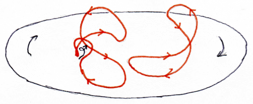
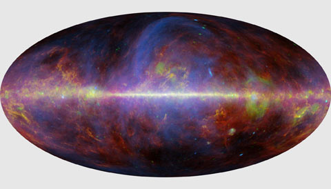
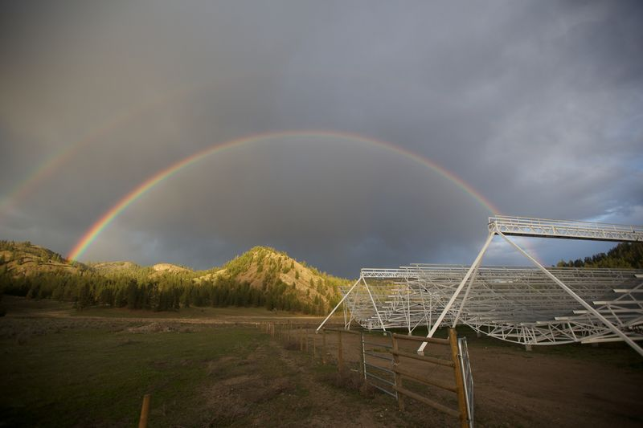

Non-parametric Bayesian inference
Measurement data always consist of a finite set of numbers. Quantities
in nature, however, are often continuously distributed and thus possess
infinitely many degrees of freedom. To infer such continuous quantities
from finite observations, we have to make use of prior information to
regularize the solution. The description of the prior statistics often
contains unknown parameters itself, leading to a hierarchical
description of the available information.
I have developed algorithms for the reconstruction of continuous
quantities under the assumption of Gaussian or log-normal statistics
without precise knowledge of the prior. One of my algorithms even
overcomes the presence of unknown outliers in a data set.
The image shows the reconstruction of a power spectrum, describing the
prior statistics of a log-normal field, making use of a spectral
smoothness prior.
See, e.g.,
arXiv:1210.6866,
arXiv:1107.2384.

Interstellar magnetic fields
Magnetic fields in the Galactic interstellar medium show structure over a
large range of scales, from coherent fields on the scale of the whole
Milky Way down to (almost) the smallest scales we can resolve in
observations. These magnetic fields are generally believed to be caused
by a dynamo mechanism that converts the kinetic energy of turbulent gas
motion into magnetic energy, aided by the rotation of the Galactic disk.
The details, however, are somewhat unclear and observational
constraints are sparse.
I make use of measurements of radiation that has been influenced by
interstellar magnetic fields, i.e., synchrotron and thermal dust
emission, as well as Faraday rotation measurements, to try to constrain
the properties of interstellar magnetic fields. I am especially
interested in the statistical properties of the small-scale magnetic
features, which may help us shed light on the underlying dynamo
mechanism. One aspect I've worked on is magnetic helicity, that is, the
twistiness of the magnetic field lines.
The image shows a rough sketch of the α-Ω-dynamo, a mechanism that can (maybe) explain why the Milky Way is magnetic.
See, e.g.,
arXiv:1008.1246,
arXiv:1601.00546.

credit: ESA/Planck
CMB foregrounds
The cosmic microwave background (CMB) radiation stems from a time 400000
years after the Big Bang and has traveled to us (almost) undisturbed
since then. As such, it holds information on the physical processes
taking place when the Universe was very young. However, in large parts
of the sky this radiation is swamped by radiation due to other effects,
happening much closer to home. These are the Galactic foregrounds,
synchrotron radiation, emission from dust grains, emission from
scattered particles, etc. We need to separate these processes from the
CMB to make use of the former for cosmology and from each other to make
use of them to further our understanding of the Galactic interstellar
medium. The main lever for disentangling the various foreground
components is their different frequency dependence. I am working on an
approach that additionally makes use of their correlations, both between
components and between different locations.
The image is a visualization of the measurements taken by the Planck
satellite. These have been decomposed into the various physical
processes, which are shown in different colors.
See, e.g.,
arXiv:1407.0941.
Faraday rotation
When linearly polarized radiation propagates through a magnetized
Plasma, its polarization plane is rotated. This effect, known as Faraday
rotation, is sensitive to one of the three components of the magnetic
field and thus can be used to study magnetic fields in diffuse plasmas.
However, it is also notoriously difficult to measure reliably.
In our studies, my colleagues and I have assembled the largest catalog
of measurements of this effect to date, based on observations of
extragalactic sources. The rotation that is recorded in the catalog for
these sources is due to magnetic fields within the Milky Way, magnetic
fields outside of the Milky Way, and faulty measurements. We were able
to separate the Milky Way's contribution from the extragalactic
contributions in the presence of faulty data by developing a dedicated
Bayesian statistical analysis algorithm for this problem. Now we are in
the process of developing and exploring statistical models to make sense
of the, much smaller, extragalactic contributions. We hope to soon be
able to constrain magnetic fields on much larger, cosmological,
length-scales.
The image shows our estimate of the amount of Faraday rotation due the
the Milky Way's magnetic field as a function of position in the sky.
See, e.g.,
arXiv:1509.00747,
arXiv:1404.3701,
arXiv:1111.6186.

credit: Keith Vanderlinde
21cm intensity mapping
When an electron residing in the ground state of a hydrogen atom
undergoes a spin flip, it emits a photon of wavelength 21cm. Since there
are a lot of hydrogen atoms in the Universe, there are also a lot of
these photons and we can detect this radiation even if it comes from far
away. Since the wavelength of the photons undergoes a redshift as the
Universe expands, we can find these photons even at longer wavelengths
and by measuring their wavelength immediately know how far they have
traveled. Mapping out the intensity of this type of radiation as a
function of distance and position on the sky, will lead to a map of the
large-scale distribution of neutral hydrogen in the Universe, and thus
of matter in general, the statistics of which will yield important
constraints on cosmological parameters.
This radiation, however, is swamped by radiation coming from within the
Milky Way, just like the cosmic microwave background (CMB) is, only more
so. However, just like in the case of the CMB, these foregrounds are
not only something we need to get rid of, but also something that can
teach us about our own galaxy. Since the observations need to take place
in the radio regime, the main foreground is synchrotron radiation,
which, via its polarization and the Faraday rotation that it undergoes,
holds the key for understanding many aspects of the magnetic fields that
surround us.
I am involved in two projects that aim to map out the cosmological 21cm
radiation. There, I am taking part in developing a pipeline that turns
data into maps, in interpreting the cosmological information, in
developing new tools for making maps of the foregrounds, and in
interpreting those.
The image shows a view of the pathfinder telescope for the Canadian Hydrogen Intensity Mapping Experiment.
Statistics of Fast Radio Bursts
Fast Radio Bursts (FRBs) have been discovered only recently. Their name
is fairly descriptive; they are fast (lasting only for about a
millisecond), they appear at radio wavelengths, and they seem to happen
in bursts (although that has only been established for one of them and
only long after they were named). Another, perhaps the most interesting,
aspect is that their radiation is highly dispersed, i.e., longer
wavelengths arrive much later than shorter wavelengths. This can be
explained by a large amount of ionized material between us and the
sources, which led many people to believe that these sources are likely
at cosmological distances.
At present, only about 20 of such events have been observed.
Nevertheless, there have been many claims regarding their distribution
in space, time, and frequency. Many of these claims can be traced back
to implicit assumptions that may or may not be justified. My colleagues
at CITA and I have chimed in with some rigorously derived statistical
statements.
The image shows the posterior distribution for the expected event rate around 1.4 GHz and the slope of the flux distribution.
See, e.g.,
arXiv:1604.03909,
arXiv:1601.04051.